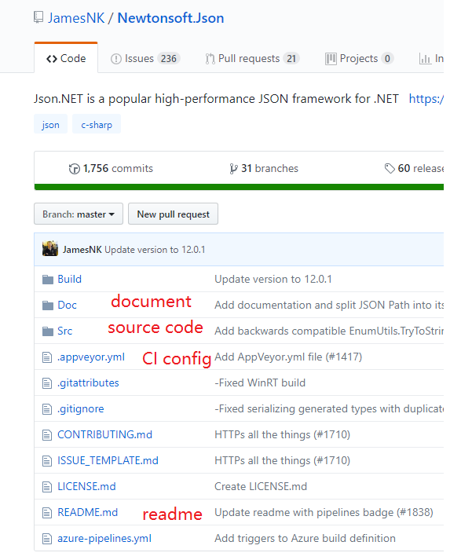
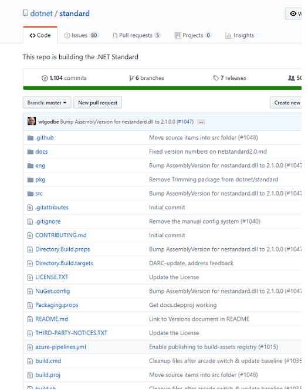
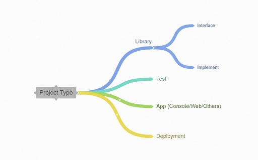
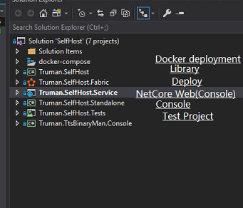
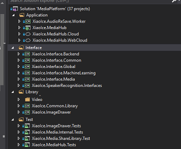

Xianyi Cui
| Category | Samples | Usage |
|---|---|---|
| Source Code | /src | contain the source codes or tests |
| Documents | /docs *.rst; *.md | docs folder or markdown/reStructuredText for documents |
| Other functional files | git config files CI* config files(appveyor,travis,circle) package dependency(package.json,requirement.txt) ... | For extended requirements & advanced features |
| Scripts | init build | including some script for us to execute for environment preparing. Save time from duplicate typing |
 
| Items | Note |
|---|---|
| Source code | - |
| Config/resource file | Avoid put dependency like .dll/.jar except native |
| Dependency/Description file | .csproj/.vcxproj package.config in .NET, pom.xml/build.gradle in Java, |

| Reference type | Pros | Cons |
|---|---|---|
| Project reference | Latest dependency change could be applyed Easy debug | Build dependency each time Extra large repo Even with git submodule Build break risk |
| NuGet reference | Fast on build | Debug require aditional nupkg or pdb Cost on package publish |
| Tools | Pros | Cons |
|---|---|---|
| IDE | 1. Easy to use 2. Clear with UI 3. Plugins | 1. Ignore a lot of details 2. Unstable |
| CLI | 1. Make users understand the details 2. Developer friendly | 1. Not intuitive 2. Cost time to learn |
| Concepts | Explain | Tools/Service |
|---|---|---|
| CI/CD | Continous Integration/Continous Delivery | Appveyor, VSTS(Cloud build), Travis,Circle |
| Scaffolding | Structure of a project for languages | Yeoman |
| Package management | Dependency managment | NuGet, npm, pip, scoop, chocolatey |